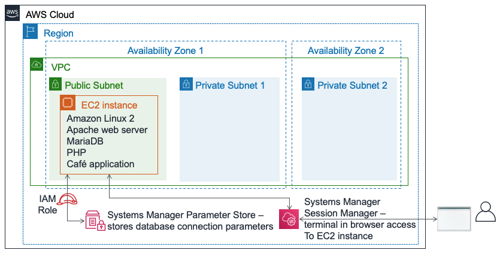
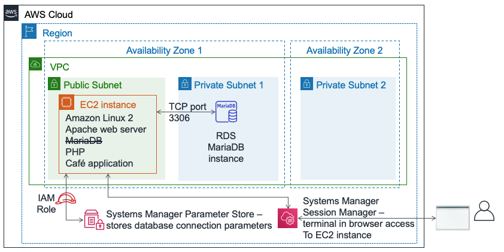
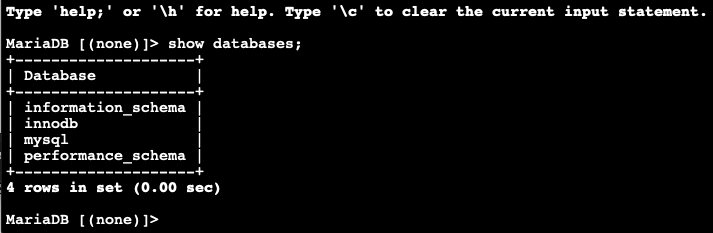

模块 5 – 挑战实验：将数据库迁移到 Amazon RDS
场景
目前，咖啡馆使用单个 EC2 实例来托管 Web 服务器、数据库和应用程序代码。
这一期间咖啡馆的业务实现了增长。数据库中存储的订单历史记录提供了宝贵的业务信息，咖啡馆员工希望确保这些信息不会丢失。Martha 需要这些数据来做账，Frank 会偶尔查看这些数据来计划各种甜点的烘焙数量。
Sofía 也有自己的担忧。数据库需要持续地升级和打补丁，但她有时可能腾不出时间。此外，数据库的管理也需要专业技能，而她又不愿意花时间去培训其他人完成数据库管理工作。同时，Sofía 还担心，咖啡馆的数据备份频率不够高。
最后，管理数据库需要技术学习投资，而 Martha 希望能够减少与之相关的人工成本。
实验概览与目标
在本实验中，您需要将数据从 Amazon Elastic Compute Cloud (Amazon EC2) 实例上的数据库迁移到 Amazon Relational Database Service (Amazon RDS)。具体而言，您需要将运行在 EC2 实例上的 MariaDB 数据库，迁移到运行在 Amazon RDS 上的 MariaDB 数据库。您还将更新咖啡馆的 Web 应用程序，以便使用新数据库来存储今后所有订单的数据。
完成本实验后，您应当能够：
创建 RDS 数据库实例
使用 mysqldump 从 MariaDB 数据库导出数据
将 SQL 客户端连接到 RDS 数据库。
将数据从运行在 EC2 实例上的 MariaDB 数据库迁移到 RDS 数据库实例
配置 Web 应用程序使用新的 RDS 数据库实例作为数据存储
在实验开始时，AWS 账户中已经提供了以下创建好的资源：

在本实验结束时，您的架构应与以下示例类似：

时长
完成本实验大约需要 80 分钟。
AWS 服务限制
本实验环境中对 AWS 服务和服务操作的访问可能仅以完成实验说明为限。如果您尝试访问其他服务或者执行本实验所述之外的操作，可能会出错。
访问 AWS 管理控制台
在本说明上方，选择 Start Lab（开始实验）以启动实验。
此时将打开 Start Lab（开始实验）面板，其中显示实验状态。
提示：如果您需要更多时间来完成实验，请重新选择 Start Lab（开始实验）按钮来重新启动环境的计时器。
请等待 Start Lab（开始实验）面板显示消息 Lab status: ready（实验状态：就绪）后，再选择 X 关闭该面板。
在本说明上方，选择 AWS。
此操作将会在新的浏览器标签页中打开 AWS 管理控制台。您将自动登录系统。
提示：如果未打开新的浏览器标签页，那么您的浏览器顶部通常会有一个横幅或图标，同时显示一条消息，指明您的浏览器阻止该网站打开弹出窗口。选择该横幅或图标，然后选择 Allow pop ups（允许弹出窗口）。
排列 AWS 管理控制台标签页，使其与本说明并排显示。理想情况下，您将同时打开这两个浏览器标签页，从而更轻松地执行实验步骤。
除非特别要求，否则请勿更改区域。
提示：要隐藏终端，可以清除屏幕顶部的 Terminal（终端）复选框。
业务请求：为咖啡馆应用程序创建 RDS 实例（挑战 1）
Olivia 是一名 AWS 解决方案架构师，经常来这里喝咖啡，在与她进行讨论之后，Sofía 觉得咖啡馆需要一种更易于维护的数据库。此外，该数据库应具备一些基本的功能，例如持久性、可扩展性和高性能。
在本实验的第一部分中，您将扮演 Sofía 的角色。您将创建 RDS 实例，用作咖啡馆网站的数据存储层。您还将连接到 EC2 实例，并分析咖啡馆 Web 应用程序的详细信息。
任务 1：创建 RDS 实例
在本实验中，您的第一个挑战是创建 RDS 实例。
创建符合规范的 RDS 实例。（在本实验结束提交作业时，系统将对上述多项设置进行检查。要想获得满分，请按照指南操作。）
Engine type（引擎类型）：MariaDB
Templates（模板）：Dev/Test（开发/测试）
DB instance identifier（数据库实例标识符）：
CafeDatabaseUsername（用户名）：
adminPassword（密码）：
Caf3DbPassw0rd!您必须完全按原样使用密码。
提示：请复制并粘贴密码来进行设置。
DB Instance Class（数据库实例类）：db.t3.micro
Storage type（存储类型）：General Purpose (SSD)（通用型 (SSD)）
Allocated storage（分配的存储空间）：
20GiB请勿请勿创建备用实例
将实例放在 Lab VPC 中
Subnet Group（子网组）：
lab-db-subnet-group，其中的数据库不可公开访问。选择名为
dbSG的现有 VPC 安全组，然后取消选择default安全组。Availability Zone（可用区）：选择列表中的第一个可用区，以
a结尾。例如，如果区域为 us-east-1，请选择 us-east-1a。Database port（数据库端口）：保留默认 TCP 端口 3306。
在实验环境中不支持增强监控。请清除默认设置。

重要提示：不要等待数据库完成创建过程，请在成功启动数据库创建过程之后继续执行下一步。
任务 2：分析现有咖啡馆应用程序部署
在此任务中，您将连接到运行当前咖啡馆应用程序的现有 EC2 实例。
浏览到 EC2 控制台，然后选择 Running instances（正在运行的实例）。
请注意，正在运行的实例名为 CafeServer。此 EC2 实例是实验开始时创建的。
测试咖啡馆应用程序。
打开新的浏览器标签页，然后通过地址
http://<public-ip-address>/cafe加载咖啡馆应用程序。注意：请使用 CafeServer 实例的实际 IPv4 公有 IP 地址更换 <public-ip-address>。
浏览到 Menu（菜单）页面，然后测试下单。
要完成测试，请将至少一个菜单项的数量更改为至少 1，然后选择 Submit Order（提交订单）。
此时应显示 Order Confirmation（订单确认）页面，表明咖啡馆网站运行正常。
选择 Order History（订单历史记录）。
页面显示已经下了多个订单。当前的数据库包含过去的客户订单，您要将这些订单迁移到托管在 Amazon RDS 上的数据库。
使用 AWS Systems Manager 连接到 EC2 实例，以在浏览器中访问终端会话。
返回 AWS 管理控制台，导航到 Systems Manager 控制台，然后选择 Session Manager。
启动会话并连接到 CafeServer。
现在您应该打开了新的浏览器标签页，其中有一个连接到 EC2 实例的终端会话。
在提示符中，输入以下命令：
bashsudo susu ec2-userwhoamicd /home/ec2-user/分析：第一个命令提供了 Bash shell。第二个命令将会话切换为在 EC2 实例上使用根用户账户。第三个命令将您切换为使用 ec2-user 账户。第四个命令应该返回输出，确认您已使用 ec2-user 身份连接。最后一个命令将您的终端切换到 ec2-user 的主目录。

注意：默认情况下，Systems Manager 代理 (ssm agent) 安装在所有 Amazon Linux 2 实例（以及其他一些操作系统类型）上。当您启动实验并且创建了 EC2 实例时，用户数据指定应在实例上启动 ssm 代理服务。此外，EC2 实例上还附加了 AWS Identity and Access Management (IAM) 角色，该角色包含名为 AmazonSSMManagedInstanceCore 的 IAM 策略。这两个操作实现了通过 Systems Manager Session Manager 访问实例。
新业务要求：从旧数据库导出数据，并建立与新数据库的连接（挑战 2）
在创建了新 RDS 实例之后，现在您可以继续执行咖啡馆数据库迁移计划的下一个步骤。接下来，您将从咖啡馆应用程序当前使用的数据库导出数据。您还将从 EC2 实例（运行应用程序的实例），建立与新 RDS 数据库实例的连接。
在此挑战中，您继续以 Sofía 的身份完成这些任务。
任务 3：处理 EC2 实例上的数据库
在此任务中，您将观察在 EC2 实例上运行的 MariaDB 数据库的详细信息。然后，使用 mysqldump 实用程序，从数据库导出现有订单历史记录数据。
观察在 EC2 实例上运行的数据库的详细信息。
在终端中，运行以下命令：
service mariadb statusmysql --version输出中应显示，在此 EC2 实例上本地安装的 MariaDB 数据库正在运行。输出中还应显示数据库的版本号。
让该浏览器标签页保持打开状态。在本实验过程中，您将使用该标签页。
返回到打开了 AWS Systems Manager 的浏览器标签页。
在左侧面板的 Application Management（应用程序管理）下，选择 Parameter Store。
请注意，这里存储了 7 个参数。咖啡馆应用程序的 PHP 代码引用了这些值（比如说，用于检索数据库的连接信息）。
选择
/cafe/dbPassword参数，并将 Value（值）复制到剪贴板。稍后您将使用此值。
连接到在 EC2 实例上运行的数据库。
在打开了 Bash 终端的浏览器标签页中，通过运行以下命令，将基于终端的 MySQL 客户端连接到数据库：
mysql -u root -p在提示输入数据库密码时，请粘贴刚复制的 dbPassword 参数值。
此时将显示
mariadb>提示。该提示指示您现已连接到此 EC2 实例上运行的 MariaDB 数据库。

观察现有数据库中的数据。
要观察数据库的内容，请输入以下命令。具体而言，您将查看支持咖啡馆 Web 应用程序的表。
show databases;use cafe_db;show tables;select * from `order`;这些命令会显示所有订单，包括您刚下的订单。
select * from `order_item`;此命令显示订单行项目。每个订单号中，所订购的每种商品类型都有一行，列出关于各商品数量和价格的详细信息。
所有这些数据将迁移到新的数据库。
退出 SQL 客户端。
exit;
使用 mysqldump 实用程序捕获文件中的现有数据。
mysqldump --databases cafe_db -u root -p > CafeDbDump.sql在提示输入数据库密码时，请粘贴 Systems Manager Parameter Store 中的 dbPassword 值。
确认 mysqldump 已成功。
在终端中运行
ls命令。输出应显示已经创建了CafeDbDump.sql文件。运行
cat CafeDbDump.sql命令以查看文件的内容。在实验接下来的部分中，您将此数据导入新 RDS 数据库。
任务 4：使用 RDS 数据库
在此任务中，您将先回答几个关于所创建的 RDS 实例的问题。然后，确认可以连接到 RDS 实例。
在 AWS 管理控制台中，返回 RDS 服务控制台，确认您创建的 cafedatabase RDS 实例现已可用。
回答有关 RDS 实例的问题
实验结束时，选择蓝色 Submit（提交）按钮即可记录答案。
查看本实验中的问题。
在本说明的上方，选择 Details > Show（详细信息 > 显示）。
选择 Access the multiple choice questions（访问单选题）链接。
在您加载的页面中，回答前四个问题：
问题 1：RDS 实例在哪里运行？
问题 2：RDS 实例是否具有所分配的 IPv4 公有 IP 地址？
问题 3：对于运行 RDS 实例的子网，应用了什么名称标签？
问题 4：为 RDS 实例定义了多少个安全组规则？
从 EC2 实例上运行的终端，建立与 RDS 实例的连接。
以下是一些入门提示：
提示 1（单击以展开）
以下是您可用于连接的语法： mysql -u admin -p --host <rds-endpoint>
使用 RDS 实例的 RDS 终端节点替换 <rds-endpoint>。
运行命令之后，系统将提示您输入 RDS 实例的密码。您在创建 RDS 实例时定义了此密码。
提示 2（单击以展开）
即使输入了正确的 RDS 终端节点和数据库密码，您仍无法连接。您必须更新运行 RDS 实例的安全组的入站规则。MySQL 客户端软件会尝试在 TCP 端口 3306 上连接到数据库。提示 3（单击以展开）
避免对所有 源 IP 地址开放端口 3306。这样会造成安全隐患。相反，您应该仅对发起连接的 EC2 实例所使用安全组中的服务器开放端口（请尝试在源字段中键入sg- 以查看选项）。
提示 4（单击以展开）
您可以确认，安全组设置在 TCP 端口 3306 上允许从 EC2 实例到数据库的流量。请尝试在 Systems Manager Session Manager 终端中运行这些命令（使用实际 RDS 终端节点替换nmap -Pn <rds-endpoint>如果命令的输出显示端口 3306 对 *mysql* 服务开放，即确认了安全组设置允许流量。
如果 nmap 显示端口开放，则
mysql -u admin -p --host <rds-endpoint> 命令也应该正常工作。（但是，您必须正确输入数据库密码。此密码是您在创建实例时设置的密码。）
注意：如果仍无法解决问题，您可以尝试提交实验说明末尾的 Submitting your work（提交作业）部分中的作业。生成的提交报告可以为未成功完成的实验部分提供额外的提示。您可以根据需要提交作业任意次。系统只保留您最后一次提交的分数。
在继续执行下一步之前，请务必确认可以成功连接到 RDS MariaDB。如果您已成功连接，恭喜！
运行
show databases;命令。应显示如下输出：
请注意，cafe_db 数据库尚不在列表中。这种情况是预料之中的，因为您尚未导入任何数据。
要断开连接，请运行
exit;命令。
新业务要求：导入数据并将应用程序连接到新数据库（挑战 3）
在之前的挑战中，您从咖啡馆应用程序当前使用的数据库中导出数据，并从 EC2 实例建立了与 RDS 实例的连接。现在，您可以处理接下来的业务需求。
在此挑战中，您将继续使用 Sofía 的角色，将咖啡馆数据导入到 RDS 数据库实例中。完成导入之后，您需要配置应用程序来使用新数据库。
任务 5：将数据导入 RDS 数据库实例
将您在任务 3 中导出的数据导入到 RDS 数据库实例。
要导入数据，请在终端中运行以下命令（其中
<rds-endpoint>是实际终端节点）：mysql -u admin -p --host <rds-endpoint> < CafeDbDump.sql出现密码提示时，输入 RDS 实例的密码。
如果没有显示任何错误，则表示命令很可能已经成功运行。
确认数据已导入。
要连接到 RDS 数据库，请运行此命令：
xxxxxxxxxxmysql -u admin -p --host <rds-endpoint>出现密码提示时，输入 RDS 实例的密码。
要确认数据已导入，请运行以下命令：
xxxxxxxxxxshow databases;use cafe_db;show tables;select * from `order`;
select 语句的输出应该至少显示数据库中的 24 个订单。
退出 SQL 客户端：
xxxxxxxxxxexit;
任务 6：将咖啡馆应用程序连接到新数据库
这是本实验最后一个任务，您需要将咖啡馆应用程序连接到新数据库，并停止在 EC2 实例上本地运行的数据库。
返回到 AWS Systems Manager 控制台浏览器标签页。
从左侧面板中，选择 Parameter Store。
回想一下，在之前的挑战实验中，咖啡馆应用程序的 PHP 代码引用了这些值。比如说，用于检索数据库的连接信息。
将咖啡馆应用程序连接到 RDS 实例。
由于数据库连接信息已更改，您必须更新这些值，以将应用程序连接到新的 RDS 数据库实例，而不是运行在 EC2 实例上的数据库。
提示 1（单击以展开）
在更新了应用程序所连接到的数据库之后，使用http://<public-ip>/cafe/menu.php 页面来测试您是否成功更新了连接。
提示 2（单击以展开）
PHP 代码无需任何更新。此外，如果您已成功完成本实验中之前的挑战，则不需要额外更改网络配置。您唯一需要进行的更新是在 Systems Manager Parameter Store 中更新一些值。提示 3（单击以展开）
currency、dbName、timeZone 和 showServerInfo 值无需更新。提示 4（单击以展开）
dbUrl 应该为 RDS 终端节点值。确认您的 Web 应用程序现在使用了新数据库。
停止仍在 EC2 实例上运行的数据库。在终端中，使用此命令：
xxxxxxxxxxsudo service mariadb stop加载
http://<public-ip>/cafe/menu.php页面，通过下单确认应用程序仍运行正常。选择 Order History（订单历史记录）。您最新的订单，以及所有其他之前的订单应都在此处。这些订单是您迁移到新数据库的数据。
咖啡馆更新

咖啡馆的每个人对数据库迁移的成果都很满意。Sofía 和 Nikhil 现在周末有更多空闲时间，这意味着 Frank 和 Martha 节省了人工费用。
Sofía 现在有时间和朋友一起放松了。不过，她还在考虑如何继续改进。下一个值得考虑的方向是减少 EC2 实例所用 EBS 卷的大小。通过更改为较小的 EC2 实例类型，也可以节省费用。由于数据库不再运行在 EC2 实例上，实例现在有了多余的硬盘空间，同样，所需的 CPU 和内存也有所减少。
提交作业
在本说明上方，选择 Submit（提交）以记录您的进度，并在出现提示时选择 Yes（是）。
如果在几分钟后仍未显示结果，请返回到本说明上方，并选择 Grades（成绩）
提示：您可以多次提交作业。更改作业后，再次选择 Submit（提交）。您最后一次提交的作业将记为本实验内容的作业。
要查找有关作业的详细反馈，请选择 Details（详细信息），然后选择 View Submission Report（查看提交报告）。
实验完成
恭喜！您已完成本实验。
要确认您希望结束实验，请选择此页面顶部的 End Lab（结束实验），然后选择 Yes（是）。
此时应显示一个面板，其中包含这样一条消息：DELETE has been initiated...You may close this message box now.（删除操作已启动... 您现在可以关闭此消息框）。
选择右上角的 X 关闭面板。
©2023 Amazon Web Services, Inc. 和其附属公司。保留所有权利。未经 Amazon Web Services, Inc. 事先书面许可，不得复制或转载本文的部分或全部内容。禁止因商业目的复制、出借或出售本文。